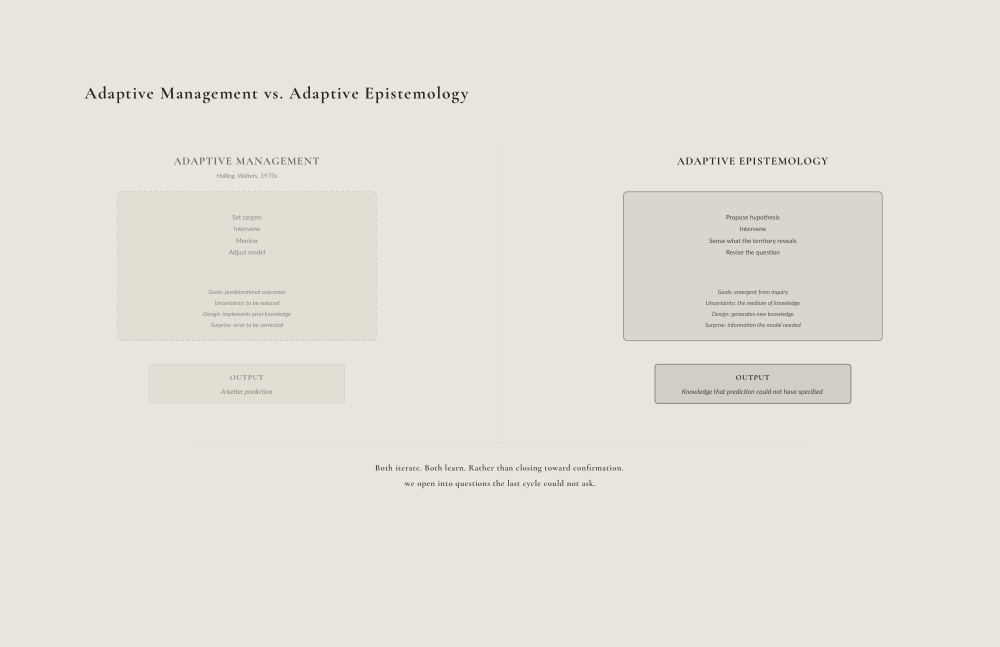

Chapter 01 ended with the veil. Pierre Hadot names two ways of
approaching it. The Promethean attitude tears the veil away, treating
nature as a set of secrets to be extracted, mechanisms to be predicted
and controlled. The Orphic attitude attends to it. Goethe called this
“delicate empiricism,” an inquiry that learns by attending to the
phenomenon rather than by forcing it to confirm a prior model (Hadot
2006). The infrastructure tradition is Promethean. It models, predicts,
builds to enforce the prediction. The adaptive epistemology developed in
this dissertation is an Orphic project conducted with Promethean tools.
The computational sensing, the robotic infrastructure, the machine
learning algorithms are Promethean apparatus. But the epistemological
orientation in which they are deployed is Orphic. Attentive to what the
system reveals rather than determined to make it confirm what the model
predicted. That tension is the condition of practice at territorial
scale.
This chapter develops a framework for adaptive epistemologies in
landscape architecture, synthesizing theoretical foundations from
evolutionary epistemology, enactivism, situated cognition, resilience
theory, and cybernetics with the practice-based design research that
runs throughout this dissertation. The theoretical traditions surveyed
in the sections that follow are not the sources of this framework. They
are the vocabularies through which a practice-focused approach generates
a legible epistemology. The framework was generated by practice, by
sensors that failed to resolve what they were measuring, by
installations truncated by the gap between speculative design and
institutional reality, by hydrological models that revealed their own
inadequacy, by systems that reorganized in ways no prior model had
anticipated. That practice is documented in the chapters that follow.
What is claimed here asks to be held provisionally and tested against
the evidence that comes after. The framework is named before the
practice is shown because the reader needs the vocabulary before it can
be grounded in the evidence.
Chapter 01 described the territorial condition. Prediction failing at
scale, infrastructure succeeding into failure, baselines dissolving
under directional change. The professional implications are immediate.
If baselines are not stable, what does restoration mean? If the future
cannot be reliably predicted, how can infrastructure be sized? If
ecosystems are inherently unpredictable, what is the designer’s
responsibility when interventions produce unintended consequences? These
are not technical problems awaiting better data. They are
epistemological problems that demand rethinking the relationship between
knowledge and practice, between expertise and uncertainty, between
design intention and emergent outcome.
From
Evolutionary Epistemology to Adaptive Knowing
The concept of adaptive epistemology has deep roots in evolutionary
thought. Donald T. Campbell’s foundational essay “Evolutionary
Epistemology” (1974) proposed that knowledge acquisition follows
processes analogous to biological evolution, variation, selection, and
retention. Just as organisms evolve through the selective survival of
randomly generated variations, knowledge evolves through the selective
retention of ideas, theories, and practices that prove adequate to the
problems organisms face. Campbell’s
“blind-variation-and-selective-retention” (BVSR) framework challenged
the view that knowledge proceeds by systematic, rational accumulation,
emphasizing instead the exploratory, experimental, and often
serendipitous character of discovery.
James K. Feibleman’s Adaptive Knowing: Epistemology from a Realistic
Standpoint (1977) extended this evolutionary framework in a direction
that matters for design. Where Campbell emphasized the blindness of
variation, Feibleman argued that knowledge acquisition is not a series
of independent trials but a cumulative process in which each acquisition
reshapes the conditions for the next. Past learning modifies the
apparatus through which future learning occurs. Feibleman had already
connected epistemological inquiry to ecological thinking in his earlier
essay “Adaptive Responses and the Ecosystem” (1969), anticipating what
would later be called resilience thinking. For this dissertation, his
contribution is specific. The sensing infrastructure that has monitored
a marsh for fifteen years does not begin each reading from scratch. Its
accumulated history of calibration, protocol adjustment, and pattern
recognition has restructured the instrument itself. Knowledge is not
added to a fixed knower. The knower is reformed by what it has
learned.
For design practice, this means that design failures are not errors
to be eliminated but are essential to the evolutionary process. They
provide the selective information that guides subsequent variation
(Campbell 1974). An epistemology that treats failure as pathological
rather than productive will systematically impede learning.
Situated Action and
Contextual Knowledge
Lucy Suchman’s Plans and Situated Actions (Suchman 1987)
introduced a crucial critique of cognitivist models of action into
human-computer interaction and design theory. Against the view that
intelligent action proceeds by formulating plans and then executing
them, Suchman argued that action is fundamentally situated and
improvised in response to the particularities of circumstances that
cannot be fully anticipated in advance. Plans are not determinative
programs that control action but are resources that actors consult and
adapt as situations unfold. The Trukese navigator who responds
moment-by-moment to wind, current, and wave does not follow a
precomputed course but engages in continuous, skillful adjustment to
present conditions. This is a model of intelligence radically different
from the European navigator’s reliance on instruments and predetermined
waypoints.
Suchman’s insight challenges the assumption that design can be
reduced to specification, the production of plans, drawings, and
documents that prescribe how a landscape should be built and managed. If
action is fundamentally situated, then specifications are at best
provisional scaffolds that will necessarily be adapted, modified, and
sometimes abandoned as implementation encounters circumstances that
could not be anticipated. The “plan” for a neo-wild landscape is not a
blueprint to be executed but a framework within which situated decisions
must be continuously made by managers, sensors, algorithms, and the
organisms and materials themselves. This does not diminish the
importance of planning but reframes it. The plan is a resource for
action, not a program that determines it.
The implications extend to knowledge production. Knowledge developed
in one context may not transfer unproblematically to another. The
hydrological dynamics of the Llobregat delta differ from those of the
Mississippi delta, not merely in quantitative parameters but in their
structural organization, their historical trajectories, and their
entanglement with different social, economic, and political systems.
Adaptive epistemology insists on the situatedness of knowledge and the
recognition that what works here may not work there, and that learning
must be continuous rather than once-and-for-all.
Embodied Cognition
and Experiential Learning
The enactivist tradition in cognitive science, developed by Francisco
Varela, Evan Thompson, and Eleanor Rosch in The Embodied Mind
(Varela, Thompson, and Rosch 1991), offers a philosophical framework for
understanding knowledge as emerging through embodied engagement with
environments rather than through disembodied mental representation.
Cognition, on this view, is not the manipulation of abstract symbols
inside heads but the enactment of a world through sensorimotor activity.
Organisms do not passively receive information from pre-given
environments but actively bring forth the domains of significance
through which they navigate. Knowledge is not stored in brains but is
distributed across body-environment systems engaged in ongoing
interaction.
This framework aligns with John Dewey’s pragmatist epistemology,
which positioned inquiry as emerging from problematic situations
encountered in practice and as oriented toward the reconstruction of
experience that transforms those situations (Dewey 1938). For Dewey,
thinking does not precede doing but is continuous with it, an
orientation captured in the phrase “learning by doing.” Education is not
preparation for life but is itself life, an ongoing process of growth
through engaged experience. Dewey’s critique of “spectator theories” of
knowledge, frameworks that position the knower as passive observer of a
world that exists independently, anticipates the enactivist insistence
on the constitutive role of action in cognition.
For landscape architecture, these frameworks suggest that design
knowledge cannot be acquired solely through instruction, mediated
analysis, or computational simulation. It requires direct engagement
with materials, sites, and the temporal processes through which
landscapes transform. The designer who has never experienced the
physical labor of planting, the sensory qualities of different soils,
the unpredictable dynamics of flooding possesses an impoverished
knowledge relative to one whose understanding is grounded in bodily
participation. This is not anti-intellectualism but a recognition that
intellectual abstractions are productive only when they emerge from and
return to embodied practice.
The slow robotics and persistent monitoring infrastructures developed
in Chapters 10 and 11 extend this embodied engagement across temporal
scales that exceed individual human experience. A sensor network that
has monitored a marsh for fifteen years possesses a form of experiential
knowledge which is encoded in data patterns and model parameters that
newly arrived human managers lack. The infrastructure’s “body” is the
assemblage of sensors, communications networks, and processing
algorithms distributed across the landscape, and its “cognition” is the
pattern recognition that emerges from continuous engagement with
environmental dynamics. Adaptive epistemology must account for these
machinic forms of embodied knowledge alongside human ones.
Systems Thinking,
Resilience, and Complexity
C.S. Holling’s seminal paper “Resilience and Stability of Ecological
Systems” (1973) introduced a distinction that has become foundational
for adaptive environmental management, the difference between
engineering resilience (the speed of return to equilibrium after
disturbance) and ecological resilience (the magnitude of disturbance a
system can absorb before shifting to an alternative stable state).
Ecological resilience emphasizes persistence through change, the
capacity of systems to reorganize while retaining essential functions
and identity, rather than the maintenance of any particular equilibrium.
Systems with high ecological resilience may fluctuate dramatically yet
persist, systems with high engineering resilience may appear stable yet
be vulnerable to threshold crossings that produce irreversible regime
shifts.
The panarchy framework developed by Lance Gunderson and C.S. Holling
(2002) extended resilience thinking across scales, modeling
social-ecological systems as nested adaptive cycles operating at
different temporal and spatial scales. Each adaptive cycle passes
through four phases, rapid growth and exploitation (r), conservation and
accumulation (K), release and collapse (Omega), and reorganization and
renewal (alpha). The “front loop” from r to K is the slow, incremental
phase of growth and stabilization. The “back loop” from Omega to alpha
is the rapid phase of collapse and innovation. Panarchy emphasizes
cross-scale interactions, small, fast cycles can trigger cascading
effects in larger, slower cycles, while larger cycles provide memory and
resources that enable recovery of smaller cycles after collapse.
The implications for design are immediate. Infrastructure designed to
maximize stability (engineering resilience) may inadvertently reduce
ecological resilience by eliminating the variability and disturbance
through which systems maintain adaptive capacity. Levees that prevent
small floods produce catastrophic failures when large floods overtop
them. Fire suppression that eliminates frequent, low-intensity burns
produces fuel accumulation that enables rare, high-intensity
conflagrations. Adaptive management must cultivate ecological resilience
through the promotion of the system’s capacity to absorb disturbance and
reorganize, rather than engineering resilience and maintaining any
particular configuration indefinitely.
The concept of adaptive capacity becomes central. Responsive
infrastructures are mechanisms for maintaining system flexibility and
redundancy. By deploying multiple small interventions rather than a
single large one, by preserving modularity so that components can be
reconfigured or replaced, and by avoiding irreversible commitments that
foreclose future options, responsive infrastructures keep systems poised
to navigate the adaptive cycle. Failure is not catastrophic but
localized and recoverable, and the knowledge gained from failure
directly informs subsequent iterations.
Cybernetic Foundations
Feedback, Communication, and
Control
The cybernetic tradition offers additional theoretical resources for
adaptive epistemology. Norbert Wiener’s foundational work on cybernetics
(1948, 1988) emphasized feedback as the mechanism through which systems
regulate themselves in relation to changing environments. A thermostat
that adjusts heating based on temperature readings, a pilot who corrects
course based on navigational feedback, an organism that modulates
behavior based on sensory input all exemplify cybernetic control through
negative feedback loops that reduce the difference between actual and
desired states.
Claude Shannon’s mathematical theory of communication (1948)
formalized the concept of information as the reduction of uncertainty,
providing a framework for understanding how signals transmitted through
channels enable coordination across space and time. For Shannon,
communication is not the transmission of meaning but the successful
reproduction of a message selected from a set of possible messages. This
framework emphasizes the statistical structure of signals rather than
their semantic content. This framework underlies the distributed sensing
infrastructures described throughout this dissertation, in which
environmental information is encoded, transmitted, processed, and acted
upon across networks of sensors, communications infrastructure, and
computational systems.
What cybernetics offers adaptive epistemology is a vocabulary for
understanding landscapes as communicative systems that are assemblages
of sensors, signals, processors, and actuators engaged in continuous
feedback. The responsive infrastructures developed in Chapter 08 are
cybernetic mechanisms. They sense environmental conditions, process
information, and modulate interventions based on feedback. The machine
learning algorithms described in Chapter 11 are cybernetic controllers.
They detect patterns in data streams and generate management
recommendations that are themselves inputs to subsequent learning. The
neo-wild landscapes that emerge from these entangled systems are
cybernetic achievements that are organized through distributed feedback
rather than centralized design.
Yet cybernetics also offers a cautionary lesson. First-generation
cybernetics assumed that systems could be optimized toward predetermined
goals through appropriate feedback control, an assumption that aligns
with predict-and-control paradigms. Second-order cybernetics, developed
by Heinz von Foerster and others, recognized that observers are
themselves part of the systems they observe, and that goals emerge
through interaction rather than being given in advance (von Foerster
1981). The shift from first- to second-order cybernetics parallels the
shift from predict-and-control to learn-and-adjust, from optimization
toward fixed objectives to navigation through evolving possibility
spaces.
Elements of a Framework
What follows is the original contribution, the specific synthesis
that twenty years of practice-based design research has produced through
the method this dissertation calls refraction, developed in Chapter 3,
and that no single theoretical tradition could have generated on its
own. The six frameworks named below are not applications of the theories
surveyed above. They are the epistemological content that emerged
through the friction between those theories and a practice that kept
encountering what they could not predict. The theoretical traditions
provide the vocabulary for naming what the practice has been producing.
They do not provide the specific synthesis that emerges from designing
responsive infrastructure at territorial scales across generational
timescales, with multiple nonhuman co-producers of knowledge and sensing
networks that constitute the epistemic field as much as they report on
it.
The six frameworks that follow are not sequential tools or a
curriculum through which practice matures. They are six aspects of a
single condition, six registers in which the plural character of
adaptive epistemology becomes visible. The predictive tradition is
singular. One model, one trajectory, one specification, one measure of
success. The adaptive condition is constitutively plural. The territory
holds multiple temporalities simultaneously, the geological, the
hydrological, the biological, the institutional, and the coupled system
through which the designer engages it holds multiple forms of
intelligence simultaneously, the designer’s tacit judgment, the
algorithm’s pattern recognition, the biological community’s evolutionary
responsiveness, the robot’s accumulated behavioral history. Multiple
ways of knowing are structurally in play, and the design task is not to
resolve them into a single authoritative account but to maintain the
conditions under which they remain in productive relation. Each
framework names a different register in which that plurality becomes a
design problem.
Multiple Intelligences
The enactivist tradition positions cognition as distributed across
body-environment systems. The multiple intelligences framework developed
through this practice extends that distribution across a different set
of partners entirely. Human judgment, machine learning, and biological
agency are three irreducibly different modes of knowing that operate
simultaneously and generate knowledge in their interaction. Machine
cognition, what this dissertation calls the Third Intelligence, is
neither a simulation of human reasoning nor a replacement for it. It is
a distinct form of knowing, computational pattern recognition operating
at scales and speeds unavailable to human perception. The algorithm that
detects sediment sorting patterns across 15,000 video increments is
accumulating a form of attention the human observer does not have. The
Spartina grass that colonizes a newly deposited sediment lobe is reading
substrate conditions through its own biological instruments. The
practitioner who reads both holds something that neither the algorithm
nor the grass can articulate on its own. Adaptive epistemology in this
practice is the methodology for holding these three knowledges in
productive relation without synthesizing them into a single account, but
designing the infrastructure through which their interactions generate
new understanding.
An early installation made this plurality tangible. The contour line
is landscape architecture’s most fundamental notation, yet it carries
the unspoken claim that it represents a stable condition independent of
the map. In Thresholds (2006), the isolines looked like contour
lines but they were not fixed. They responded in real time to the
gradient generated by a painted mural, lighting, and pedestrian
movement. The contour became a hypothesis rather than a fact. It
reflected decisions about thresholds, datum, sensing resolution, and
representational conventions, and altering any of those decisions
produced a different landscape even when the underlying terrain remained
constant.
Technogeographies of Sensing
The cybernetic tradition emphasizes feedback via sensing, processing,
and acting. But cybernetics assumed that what is sensed is a given and
that sensors report on a pre-existing world. The technogeographic
analysis in Chapter 07 shows that this is not the case, and that the
instrument constitutes the phenomenon. To design a sensing
infrastructure is to design the terms on which the landscape can be
known. This is not relativism, the marsh is real regardless of what is
measured, but what the marsh reveals depends entirely on the instruments
through which it is read. And no single instrument captures what the
territory is, because a territory is not a single kind of thing. When
two sensors disagree, when the satellite tide gauge and the in-situ
conductivity sensor produce a gap between their readings, that gap is
not instrument error to be resolved through calibration. It is
information about a process that neither sensor was designed to capture
alone, knowledge that lives in the divergence between accounts rather
than in either account separately. Choosing what to sense is the first
epistemological act of adaptive design. Attending to the divergences
between what different instruments reveal is the second, and it is where
the plurality of the territory becomes most visible.
Wetware as Medium
Adaptive management postures ecological systems as the objects of
management intervention. This practice has learned through projects
truncated pruning cycles and through the landscape’s reorganization
under managed water flows that biological systems are not solely objects
of inquiry but active participants in generating knowledge. The plant
that responds to the robot’s cuts is producing data about its own
growing conditions through its own biological logic. Its response is a
form of knowledge about the interface between designed intervention and
biological agency, knowledge that the plant is generating on its own
terms and that the designer must learn to read. Wetware is not
biological infrastructure enrolled in technical systems. Rather, it is a
knowledge producer that design must learn to read alongside the sensor
networks and within the algorithms. Adaptive epistemology designed for
this kind of practice must include a methodology for reading biological
response as evidence and for treating plant growth, sediment
colonization, and species arrival not as outcomes to be evaluated but as
data that revises the next intervention.
When sensing, analysis, and construction occur simultaneously rather
than sequentially, a continuous feedback loop replaces the linear
process that conventional practice assumes. The divergence between these
two temporal modes is itself a form of knowledge, one that becomes
visible only when the apparatus is designed to sustain both at once.
Generational
Robotics and Distributed Knowledge
The enactivist tradition, and Dewey’s learning-by-doing, both assume
a human practitioner whose body accumulates experience across a career.
Generational Robotics extends this temporal frame beyond any individual
career, beyond any institutional memory, into the kind of duration that
ecological succession requires. A marsh robot that has been operating
for thirty years has developed knowledge of site-specific hydrological
dynamics, sediment behavior, and vegetation succession through its own
accumulated engagement with the territory. That knowledge is not held in
any mind. It is distributed into the machinic parameters, into the
database it has built, into the management protocols it has refined
through iteration. Adaptive epistemology must account for this
distributed, infrastructural form of knowledge and must treat the
persistent machine as a knowledge system that continues learning after
its designers have departed. This changes what it means for design to
produce knowledge, as knowledge produced by generational infrastructure
is not held by any practitioner. It is embedded in the landscape
itself.
Coupled
Ecologies as the Territorial Condition
Wetware names the biological medium. Coupled Ecologies names the
territorial condition that results when biology, computation, and
infrastructure are no longer separate domains but a single operative
system. The islands and dredge channels of the Chesapeake Bay,
simultaneously a living marsh, a sensor network, and an adaptive
management protocol, constitute a coupled ecology. Not a natural system
with a technological prosthesis but a territory in which the biological
and the computational are inseparable. Adaptive epistemology must
account for knowledge produced within this coupling, knowledge that is
neither purely ecological nor purely computational but emerges from
their ongoing interaction. The coupled ecology is not a design outcome.
It is the condition within which this practice’s epistemology
operates.
Reflexive Stewardship
The five frameworks above describe what adaptive epistemology
involves and how it operates. Reflexive Stewardship, the sixth, names
what it demands of the practitioner. The designer is not an external
observer with a neutral vantage point. She is a participant whose
knowledge is partial, whose position within the coupled system shapes
what she can perceive, and whose decisions are part of the system’s
dynamics rather than inputs from outside it. Reflexive Stewardship takes
this seriously, not as a limitation to be overcome but as a structural
feature of practice in plural systems.
The reflexive dimension is not introspection. It is the active
cultivation of the knowledge that the practitioner’s own vantage point
makes invisible. A territorial system holds forms of knowledge that the
technical apparatus cannot generate and the designer’s training has not
equipped her to perceive, knowledge held in the practices of communities
who have inhabited the territory across generations, in the biological
community’s accumulated responsiveness to conditions the sensors have
not been calibrated to measure, in the system’s own history of prior
interventions. Reflexive Stewardship requires building the conditions
under which these forms of knowledge enter the adaptive learning loop as
formative inputs, not as consultation appended to an already-determined
process but as constitutive elements of an inquiry that is plural from
its inception.
This is why the goals of a project are themselves hypotheses. If
adaptive epistemology locates knowledge in the coupled system rather
than in the designer’s head, then the monitoring is not only a check on
performance, it is a check on whether the question being asked is the
right one. When the monitoring reveals that a community bears
disproportionate burdens from an intervention, that is not an equity
concern appended to a technical finding. It is evidence that the
proposition was wrong, that the practitioner’s vantage point had made
the community’s conditions invisible, that the inquiry needs to be
revised at the level of its assumptions. Stewardship without reflexivity
becomes management. Reflexivity without stewardship becomes critique
without consequence. Together they name the condition under which
knowledge worth having can be produced at all.
The ethical risks of ceding decision-making to autonomous systems are
not peripheral to this argument. When the territory’s autonomy
increases, human situational awareness decreases, and the relationships
between human communities and their environments are restructured in
ways that may not be visible to either. Reflexive Stewardship requires
retaining responsibility for monitoring and intervening, even and
especially when the system operates independently.
The cultivant, developed from Raxworthy's viridic (2018) and extended
to territorial scales in Chapter 11, names the disposition from which
this practice is conducted, the ongoing negotiation between designed
intention and biological agency in which territorial maintenance is the
primary design act. The cultivant is not a seventh framework but the
practitioner's posture within all six, provisional, attentive,
adjusting, tending an ongoing relationship whose trajectory is
influenced but not determined.
Gilbert Simondon’s philosophy of individuation provides the
ontological ground for why adaptive epistemology cannot treat its
instruments as fixed tools applied to passive material. For Simondon,
technical objects undergo their own process of individuation, evolving
through their interactions with the environments in which they operate
(Simondon 1958). A sensing apparatus is not the same object after three
years of deployment as it was on the day it was installed. The
protocols, the calibrations, the accumulated knowledge of how the system
behaves under specific conditions have individuated it into something
its designers did not fully specify. What Simondon calls “technical
mentality,” the capacity to understand objects through their genesis and
relations rather than through their function alone, is what adaptive
epistemology demands of the practitioner. The instruments, the
organisms, the institutions that maintain them are not static components
of a design. They are entities in the process of becoming, and the
designer’s role is to attend to that becoming rather than to arrest
it.
Together, these six frameworks constitute an adaptive epistemology
specific to territorial landscape practice, a practice that operates
with multiple nonhuman co-producers of knowledge, through sensing
infrastructure that constitutes as much as it reports, across timescales
that exceed human institutional memory, toward landscapes whose forms
emerge through biological agency within the frame the design provides.
The frameworks are not a sequence or a toolkit. They are simultaneous
registers of a single plural condition, and their value is not in any
individual framework’s claim but in the architecture they produce
together. An account of knowledge production at territorial scale in
which the territory itself participates, in which multiple forms of
intelligence operate simultaneously, and in which the designer’s role is
to maintain the conditions under which their productive relation
continues. This is adaptive epistemology not as a borrowed framework but
as a disciplinary contribution, landscape architecture’s answer to the
question of how knowledge is produced when the systems being designed
are more complex, more alive, and more temporally extended than any
single account can hold.
The laboratory practice documented in Chapters 05 and 06 provides the
evidence for this claim, knowledge generated through action, hypotheses
treated as experimental conditions, understanding emerging from material
friction rather than from theoretical formulation alone.
The adaptive epistemology proposed here can be understood through
what Bratton (2025) calls a “Copernican trauma,” a moment when
existential technology forces a fundamental reconceptualization of our
position within the systems we study. Just as the telescope forced
heliocentrism and computational climate modeling forced the Anthropocene
concept, the six frameworks developed across this dissertation force a
recognition that landscape design knowledge is not applied from outside
the system but produced from within it, through distributed
intelligence, material engagement, and temporal scales that exceed any
individual practitioner’s career.
Bratton’s argument that computation was discovered as much as it was
invented, that computation is a planetary phenomenon rather than merely
a human industrial product, supports the claim that the responsive
infrastructures described here are not artificial impositions on natural
systems but new phases in what Bratton calls the ongoing coupling of
biogenesis and technogenesis.
The image is worth holding. The lithosphere folding itself to produce
forms of intelligence that deduce things about themselves. That is what
a sensor-equipped marsh is. That is what a robot tending a living
shoreline across decades is. The adaptive epistemology developed here
does not describe this condition from outside, rather it operates from
within it.
An Epistemological
Reorientation
The stationarity crisis described in Chapter 01 reveals a problem
that extends deeper than climate change. Complex adaptive systems
exhibit emergent behaviors that cannot be predicted from knowledge of
component parts, nonlinear dynamics that amplify small perturbations
into large effects, and sensitivity to initial conditions that produces
divergent trajectories from nearly identical starting points. Ecological
systems are characterized by thresholds, tipping points, and alternative
stable states that may persist for decades before suddenly collapsing.
Social systems introduce reflexivity, defining the actors who respond to
predictions in ways that alter the conditions being predicted. Under
these circumstances, the appropriate response to uncertainty is not
better prediction but better adaptation.
Wicked Problems and
Design as Inquiry
Horst Rittel and Melvin Webber’s concept of “wicked problems” (1973)
provides a framework for understanding why predict-and-control
approaches fail in social and environmental planning. Wicked problems,
unlike “tame” problems in science and engineering, have no definitive
formulation, no stopping rule, no true-or-false solutions, only better
or worse outcomes that cannot be tested in advance. Every wicked problem
is essentially unique. Every attempted solution is a “one-shot
operation” with irreversible consequences. And every wicked problem is a
symptom of another problem. The planner confronting wicked problems “has
no right to be wrong” unlike the scientist who can learn from failed
experiments, the planner’s interventions produce real-world effects that
cannot be undone.
Climate adaptation, ecosystem restoration, and territorial landscape
management are paradigmatic wicked problems. There is no definitive
formulation of what “successful adaptation” or “restored ecosystem”
means and different stakeholders bring different values, different
knowledge, and different visions of desirable futures. There is no
stopping rule and conditions continue to change, and management must
continue indefinitely. Solutions cannot be tested in advance, the only
way to learn whether an intervention will work is to implement it and
observe the results. And every intervention produces consequences that
reshape the problem, a sediment diversion that builds land changes
hydrological patterns, ecological communities, and stakeholder interests
in ways that alter what subsequent interventions should attempt.
Rittel and Webber called for “second-generation” approaches to
planning based on argumentative processes in which images of problems
and solutions emerge gradually through dialogue among participants. This
aligns with Judith Innes and David Booher’s framework for evaluating
collaborative planning through the lens of complex adaptive systems
(1999). Consensus-building processes are not merely means to producing
agreements but are experiments in social learning through which shared
meanings emerge and adaptive capacity is built. The process is as
important as the product, perhaps more important, because the
relationships, trust, and mutual understanding developed through
collaboration persist as resources for navigating future uncertainties
that the current agreement could not anticipate.
Evgeny Morozov’s critique of “solutionism” names what is at stake
when wicked problems are treated as tame ones. Technical solutions that
optimize within predefined constraints displace rather than resolve
underlying conflicts, obscuring their political and historical
dimensions (Morozov 2013). Adaptive epistemology is not a better
solution. It is a different relationship to the problem.
Defamiliarization, the deliberate displacement of a familiar activity
into an unfamiliar context, can uncover assumptions that routine
practice conceals. When design methods developed for one context are
deployed in another, the gap between ordinary application and new
deployment reveals what the original framing had suppressed. Chapter 05
traces several such displacements across the practice documented in this
dissertation.
Reflective Practice
and Knowing-in-Action
Donald Schön’s concept of “reflective practice” (1983) offers a
framework for understanding professional expertise that aligns with
adaptive epistemology. Against the “technical rationality” that
positions professional practice as the application of scientific theory
to well-defined problems, Schön argued that competent practitioners
navigate uncertainty, uniqueness, and value conflict through
“reflection-in-action,” a kind of thinking that occurs in the midst of
practice and shapes action as it unfolds. The professional’s implicit
“knowing-in-action”, the tacit skill and judgment that enable competent
performance without explicit deliberation, is complemented by reflection
that surfaces assumptions, questions framings, and experiments with
alternative approaches when situations resist routine handling.
Schön’s framework emerged from observations of architects, engineers,
psychotherapists, and planners engaged in practice. Design, in this
view, is a “reflective conversation with the situation” (1983, 76) in
which the designer makes moves that produce effects that may surprise,
requiring reframing and new moves in response. The situation “talks
back,” revealing constraints and possibilities that could not have been
anticipated in advance. Competent design is not the implementation of
predetermined solutions but an improvised navigation through a situation
that unfolds through the designer’s engagement with it.
For landscape architecture, reflective practice becomes essential
under conditions where no amount of technical analysis can determine in
advance what interventions will prove adequate. The “landscape as model”
framework developed in Chapter 08 institutionalizes reflective practice
at territorial scales, the landscape becomes the experimental apparatus
through which hypotheses are tested and the situation “talks back”
through distributed monitoring, responsive infrastructure, and evolving
interfaces.
Stamm pushes Schön’s framework toward a more radical claim. Where
Schön proposes that practitioners reflect in and on action, Stamm argues
that the medium of reflection matters as much as the act. Reflection
conducted through discursive concepts rather than through the medium of
practice itself produces what he calls a “travesty of discourse” in
which the practitioner is “lost in translation” between the material and
the formal realm (Stamm 2013, 35). The cognitive yield of practice is
not an insight waiting to be translated into language. It is sui
generis, a form of knowledge that exists only in the work and is
distorted by the very conceptual scaffolding that purports to reveal
it.
This is not an argument against writing or theorization. It is an
argument about the direction of epistemic authority. Stamm’s principle
of “medial fidelity,” the requirement that inquiry remain in the medium
of the practice rather than defaulting to discursive abstraction, does
not prohibit the use of concepts. It functionalizes them as scaffolding,
as transitory structures that should be made redundant through the
execution of the research itself (Stamm 2013, 38). The concept does not
bear the onus of insight. The work has cognitive primacy.
For this dissertation, medial fidelity means that the tools, models,
sensing networks, and robotic systems documented in Chapters 05 through
10 are not illustrations of a theory developed elsewhere. They are the
primary medium through which the epistemological claims are made. The
written chapters provide the scaffolding that makes those claims legible
to readers outside the practice, but the scaffolding is secondary to the
work itself. If the frameworks developed here could only be understood
through the written exegesis and not through engagement with the
practice that produced them, the research would have failed on Stamm’s
terms.
Charles Waldheim’s Landscape as Urbanism (2016) makes the
disciplinary argument on which this epistemological reorientation
depends. Waldheim contends that landscape architecture, precisely
because it has always operated with living, temporal, and indeterminate
media, is better positioned than architecture or urban planning to
address the conditions of contemporary urbanization such as horizontal
sprawl, infrastructural obsolescence, ecological disruption, and the
collapse of stable planning horizons. What Waldheim frames as a
disciplinary realignment, landscape supplanting architecture as the
primary medium of urban order, this dissertation reframes as an
epistemological one. If landscape is the discipline of indeterminacy,
then its epistemology must itself be adaptive and capable of producing
knowledge through engagement with systems whose behavior exceeds
prediction. The six frameworks developed here supply the epistemological
content that Waldheim’s disciplinary argument requires but does not
itself provide. Adaptive epistemology is what landscape-as-urbanism
becomes when it takes its own indeterminacy seriously not just as a
design strategy but as a mode of knowing. Alexander Robinson and Brian
Davis articulate the practitioner’s role that follows. The landscape
architect as choreographer developing narratives, establishing
interactions, and determining how feedback is incorporated, moving from
the delivery of solutions to the design of interfaces through which
evolving conditions can be perceived and negotiated (Robinson and Davis
2018).
Adaptive Management and Its
Limits

Figure 02_05Adaptive Management vs Adaptive Epistemology Diagram | Bradley Cantrell
Adaptive management, developed by C.S. Holling, Carl Walters, and
their collaborators beginning in the 1970s, operationalizes aspects of
this epistemological orientation for natural resource management
(Holling 1978; Walters 1986). Its core insight, that management actions
are themselves experiments generating information about system behavior,
is foundational to this body of work. Bryan Norton and Anne Steinemann
(2001) ground adaptive management in pragmatist philosophy, arguing that
environmental values emerge through social inquiry rather than being
given in advance. Kai Lee (1993) extends this into “civic science,” a
mode of inquiry combining experimental orientation with democratic
deliberation. These contributions are real and this dissertation is
indebted to them. But adaptive management, as the following section
argues, remains within a horizon that adaptive epistemology seeks to
expand.
Practice Under Adaptive
Epistemology
The distinction from adaptive management is not a matter of degree.
Adaptive management proposes iterative cycles of action, monitoring, and
adjustment, and that contribution is real. But its epistemological
assumptions remain within the predictive paradigm. The goal of
monitoring is to reduce uncertainty, to improve model accuracy, to
converge toward better predictions of system behavior. Adaptive
epistemology makes a different claim. It proposes that design practice
is itself a mode of knowledge production, that the design proposition,
built and deployed, generates categories of knowledge that cannot be
produced in advance through modeling alone. The distinction is not
between managing adaptively and managing statically. It is between
treating knowledge as something that precedes and guides action and
treating it as something produced through action. The design is not the
application of prior knowledge to a site. The design is an experiment
that produces the knowledge we did not yet have.
Stamm’s formulation of radical practice research clarifies what is at
stake in this distinction. Practice research in its most radical form,
he argues, “explores creation exclusively through creation.” The
research heuristic is not a hypothesis to be verified but a “possibility
to be actualized,” and to actualize a possibility is categorically
distinct from verifying a hypothesis (Stamm 2013, 33). The adaptive
epistemology developed here operates in exactly this register. When a
sensing apparatus deployed in a wetland produces readings that diverge
from the model’s predictions, the divergence is not a failed
verification. It is a new possibility that has been actualized,
something the territory has done that no prior hypothesis had learned to
ask for. The knowledge produced is not a correction of the model. It is
evidence that the territory’s adjacent possible has expanded in a
direction the model could not have specified.
This distinction has practical implications that reach beyond
semantics. An adaptive management framework, however, iteratively it
operates, still requires specifying goals before intervention, target
species abundances, water quality thresholds, salinity gradients,
restoration benchmarks. The monitoring is designed to measure progress
toward those predetermined targets. When the system exceeds the model’s
predictive capacity, adaptive management tends to respond by improving
the model, incorporating the new data and recalibrating predictions.
Adaptive epistemology does not assume that better prediction is the
goal. What it produces instead, and the evidence for this runs through
the chapters that follow, is not improvements in predictive accuracy but
shifts in what questions are revealed. A sensing apparatus that fails to
resolve the morphology of a depositional layer often reveals new
relationships, the territory doing something in the gap between what the
instrument expected and what it found. A plant that responds to robotic
pruning through a resistance within its biological logic is generating
knowledge on its own terms, knowledge the designer’s hypothesis had not
yet learned to ask for. Chapter 05 traces these shifts across twenty
years of practice. The claim here is structural in that adaptive
epistemology treats such moments as the primary site of knowledge
production rather than noise that should be eliminated from the
system.
This disposition can be cultivated pedagogically. When students are
asked to construct representations of landscapes that do not yet exist,
future coastlines, reconceived wadi systems, they must work from process
logic before any empirical confirmation. The gap between proposition and
precedent becomes the knowledge they need to generate design
hypotheses.
Stuart Kauffman’s concept of the adjacent possible provides the
structural logic for how adaptive epistemology advances. In complex
systems, evolution does not leap to optimal solutions. It explores what
is adjacent to what already exists, each step opening a new set of
possibilities that were not available before the step was taken
(Kauffman 2000). A predict-and-control paradigm attempts to leap
directly to the answer, specifying the desired state and engineering
toward it. Adaptive epistemology stays in the adjacent possible,
allowing each intervention to reveal what the next question should be.
The designer does not arrive at the territory with a solution. The
designer arrives with a proposition, and the territory’s response
determines what becomes available next. This is not incrementalism, it
is a fundamentally different relationship to futurity, one in which the
future is not predicted but produced through the accumulation of
adjacent steps that no single model could have specified in advance.
The political ecology implications follow directly. If adaptive
management improves prediction toward predetermined goals, then the
goals themselves, what to protect, who to protect it for, what counts as
ecosystem health, remain outside the epistemological loop. They are set
before the monitoring begins and are not subject to revision by what the
monitoring reveals. Adaptive epistemology insists that the goals
themselves are hypotheses. The monitoring is not just a check on
performance, it is a check on whether the question being asked is the
right one.
This is why Reflexive Stewardship makes plurality a design constraint
rather than an ethical supplement. If the goals of a project are
hypotheses subject to revision, then what the monitoring reveals about
who bears disproportionate burdens is not merely an equity concern
appended to a technical process. It is evidence that the hypothesis was
wrong, that the proposition was not producing the knowledge or the
landscape conditions it claimed to be producing. The revision demanded
is not cosmetic. It is fundamental.
The distinction matters beyond the academy because the alternative is
already underway and accelerating. Adaptive management enhanced with
machine learning, optimization algorithms, and real-time sensing is
being deployed across coastal, fluvial, and urban systems worldwide. If
the epistemological assumptions of predict-and-control remain embedded
in that deployment, if the goal of monitoring is still to reduce
uncertainty toward better prediction rather than to receive what the
territory is producing on its own terms, then the computational
enhancement does not change the paradigm. It makes the paradigm faster.
The territory’s capacity to surprise, the divergence between instrument
readings where the most valuable knowledge lives, is filtered out as
noise rather than followed as signal. Adaptive epistemology is not an
improvement on this trajectory. It is a departure from it.
Design as Cultural Practice
While adaptive epistemology emphasizes provisionality and
responsiveness, design under this framework does not abandon
form-making. Landscape architecture is a cultural practice. Gardens,
parks, and designed landscapes are cultural artifacts that embody
values, aspirations, and ways of relating to the world. Elizabeth
Meyer’s argument for “sustaining beauty” (2008) insists that aesthetic
experience is not a superficial addition to ecological function but a
primary means through which landscapes communicate and persuade. The
designer operating under adaptive epistemology does not stop composing.
The composition changes its relationship to time.
This creates a genuine tension that the dissertation does not fully
resolve. Adaptive epistemology treats every intervention as provisional,
subject to revision by what the monitoring reveals. Yet designers must
make decisions that fix form, at least temporarily. Every planting plan,
every grading scheme, every infrastructure alignment is a commitment
that forecloses some futures while enabling others. The question is not
whether to commit but how to commit in ways that remain revisable, that
anticipate the need for adjustment, that hold open the possibility of
learning from what the commitment produces. How this provisionality can
coexist with the cultural weight that designed landscapes carry, as
monuments, as places of meaning, as sites of collective memory, remains
an open question, one that the discipline will need to navigate as
adaptive methods become more central to practice.
The neo-wild landscapes that emerge from the framework developed in
this dissertation, computationally managed territories that appear wild
while being intensively monitored and maintained, are cultural artifacts
of a particular kind. They express a relationship to nature
characterized by orchestration rather than control, by attention rather
than mastery. They are not formless. They are forms that hold becoming,
designed infrastructure that establishes conditions within which
appearances, processes, and ecologies develop according to logics that
include but exceed the designer’s intentions.
This reframes the relationship between adaptive epistemology and
design authorship. The designer is not the sole author of the landscape,
other agents contribute, biological, computational, geological, social,
and the design is never finished in the conventional sense. But the
designer’s intentionality is not diminished. It is redirected from
specifying outcomes to calibrating conditions, from composing objects to
composing the terms on which objects emerge and change.
The computational work developed in Codify (2018)
illustrates this reframing. A rule such as “Place a Populus
deltoides wherever soil moisture exceeds 40% and slope is less than
5 degrees” is not a specification but a hypothesis. When the algorithm
runs against actual site data, the territory tests the proposition. If
the resulting planting concentrates trees in places the designer’s
intuition would not select, the territory reveals a relationship the
designer had not fully understood. If the plan produces ecologically
absurd concentrations, the territory shows the rule is underspecified or
missing variables. In either case the algorithm provides knowledge about
the hypothesis rather than confirming a specification. Computational
thinking about landscape, in this frame, is adaptive epistemology
operationalized in code.
Machine
Intelligence and Distributed Knowledge
Figure 02_10Landscapes of the Line | Adam Mekies and Bradley Cantrell + Sherwood Design Engineers + Arqui 9
The distributed intelligence framework developed in Chapter 11
positions machine learning algorithms not as tools that execute human
intentions but as active participants in knowledge production. Machine
intelligence extends adaptive epistemology by enabling learning at
scales and speeds beyond human cognitive capacity, detecting
correlations across thousands of sensor streams that no human observer
could perceive. Yet it also introduces epistemic challenges. Algorithms
are not transparent, and the recommendations they generate may be
correct without being understood.
Agüera y Arcas (2025) proposes that prediction is fundamental to all
life, rivers predict sediment paths, forests predict seasonal cycles,
wetlands predict flood thresholds. The machine intelligence deployed in
this dissertation’s responsive infrastructures is not imposing novel
logic on passive nature. It is making visible and shareable the
predictive processes that landscapes have always performed. Bach (2009;
Bach and Sorensen 2025) extends this by proposing that mind itself is
substrate-independent information processing, capable of exceeding the
specifications of the system that generated it. When a system produces
an output that its initial conditions did not specify, it is generating
knowledge through its own process of becoming, knowledge that belongs to
the coupling rather than to any designer. Chapter 11 develops this
argument in full.
The responsive infrastructures described throughout this dissertation
are epistemological apparatus, systems that produce knowledge through
their engagement with landscapes. What sensors measure determines what
can be known, what algorithms optimize determines what is valued, what
interfaces display determines what is visible. The design of responsive
infrastructure is therefore a form of epistemological politics. Choices
about what to monitor, what to optimize, and what to display are choices
about what matters and whose knowledge counts.
The theoretical elegance of adaptive epistemology confronts
substantial obstacles when translated into the institutional realities
of professional landscape architecture practice. The discipline’s
organizational structures, contractual frameworks, liability regimes,
and business models have evolved around assumptions fundamentally
incompatible with adaptive approaches, that projects have definable
scopes, fixed deliverables, determinable endpoints, and attributable
outcomes. A practice premised on ongoing learning, provisional
knowledge, and emergent outcomes does not fit neatly into professional
structures designed for the delivery of completed works.
These incompatibilities are not superficial inconveniences but
structural barriers embedded in the legal, economic, and institutional
systems through which landscape architecture operates. Addressing them
requires not merely adjustments to individual project approaches but
transformations in how the profession conceives of its services,
structures its relationships with clients and collaborators, and
positions itself within broader systems of environmental governance. The
difficulty of this transformation should not be underestimated, nor
should its necessity, if landscape architecture is to remain relevant to
the territorial challenges of climate adaptation, ecological
restoration, and infrastructure resilience that define contemporary
environmental practice.
The NEOM consultation (2022–25) provides the most direct evidence
that adaptive epistemology is not a theoretical preference but a
practical necessity. When GeoHECRAS modeling revealed that conventional
channelization of the wadis surrounding The Line would require
infrastructure widths exceeding 200 meters with hardened concrete at
velocities incompatible with ecological function, the conventional
predict-and-control framework had produced a solution that was
technically achievable but ecologically, economically, and socially
impossible. The adaptive alternative, reconceiving the wadis as holding
areas, recharging aquifers, managing a fluctuating coastal isohaline
zone, emerged not from a preference for adaptive methods but from the
demonstrated failure of the only alternative. The landscape’s own
dynamics created the opening for adaptive practice, not the other way
around.
The implementation of adaptive epistemology in professional practice
confronts substantial structural barriers, in liability frameworks,
financing models, business structures, regulatory systems, and
professional culture, that Chapter 12 addresses in detail. These
barriers are real, they are embedded in the legal, economic, and
institutional systems through which landscape architecture operates, and
they will not yield to theoretical argument alone. But they are also
navigable, as specific project moments in this research program have
demonstrated.
Uncertainty as Resource
Adaptive epistemology does not eliminate uncertainty but transforms
the relationship between design practice and the indeterminacies it must
navigate. Rather than treating uncertainty as an obstacle to be overcome
through better data and more sophisticated models, adaptive epistemology
treats uncertainty as a permanent condition that practice must learn to
inhabit. Rather than positioning the designer as expert who possesses
the knowledge required to solve problems, adaptive epistemology
positions the designer as learner who participates in ongoing inquiry
alongside human and nonhuman collaborators. Rather than conceiving
design as the specification of fixed forms to be built and maintained in
perpetuity, adaptive epistemology conceives design as the orchestration
of evolving processes that unfold across generational timescales.
This reorientation is not a retreat from rigor but a different
conception of what rigor means. Adaptive design is rigorous in its
attention to evidence, its systematic approach to hypothesis testing,
its commitment to detecting and learning from failure, and its
transparency about uncertainty and the limits of knowledge. It is
rigorous precisely because it acknowledges that knowledge is
provisional, that systems are complex, and that the future cannot be
reliably predicted and it develops methods appropriate to these
conditions rather than methods that assume away the challenges they
pose.
Projects documented in Chapter 05 embody this reorientation
materially. Drawing processes in which each layer can be erased or
overlaid, where the work’s current state records the accumulation of
decisions rather than presenting a predetermined future. Installations
whose curtailed operation revealed what sustaining an autonomous
feedback loop actually requires. Not only hardware but institutional
infrastructure, maintenance protocols, calibration schedules, resource
commitments. In each case, the gap between the proposition and what the
practice encountered was itself knowledge about the full scope of what
adaptive design demands.
For landscape architecture confronting climate change, ecological
degradation, and socio-political volatility, adaptive epistemology
offers not merely new methods but a different relationship to the
uncertainties that define contemporary practice. The territorial
landscapes described throughout this dissertation, the deltas,
coastlines, and wetlands that must be managed under conditions of
radical uncertainty require approaches that previous generations of
designers could not have imagined. They require responsive
infrastructures that adjust to changing conditions, distributed
intelligences that detect patterns beyond human perception, and adaptive
governance frameworks that sustain learning across generational
timescales.
This is not a diminished vision of landscape architecture’s potential
but an expanded one. The designer who embraces adaptive epistemology
participates in processes that extend far beyond the conventional
project, engaging with systems that unfold over decades and centuries,
that involve organisms, materials, and machines as active collaborators,
and that produce landscapes whose forms could not have been predicted at
the outset. These are landscapes of emergence, of surprise, of becoming,
shaped by the interaction of designed infrastructure and biological
agency rather than by specification alone. They are landscapes adequate
to the challenges of the Anthropocene and landscapes designed not for a
world that no longer exists but for worlds that are still coming into
being. They are not designed for stability. They are designed to learn,
and the discipline that produces them must learn to evaluate them on
those terms.
These are landscapes of emergence, of surprise, of becoming. They are
landscapes adequate to the challenges of the Anthropocene and landscapes
designed not for a world that no longer exists but for worlds that are
still coming into being.
What follows is the evidence. Chapter 03 establishes refraction
as the methodological practice through which this framework became
legible. Chapter 04 maps the ecology of collaboration within which the
research was produced. Chapter 05 traces twenty years of practice
through four phases, from representation to operation to codification to
autonomy, demonstrating the epistemological shifts that only the long
view across projects could reveal.
Chapters 06 through 11 develop the six frameworks through the
projects and territories that generated them. Chapter 06 traces the
history of fluvial modeling and the departure from prediction that the
practice’s physical models enact. Chapter 07 examines the plurality of
sensing and the neo-wilds that emerge where technogeographic coverage
meets its own limits. Chapter 08 proposes the landscape itself as a
computational medium. Chapter 09 develops the shifting model of
interactions through Wetware and Coupled Ecologies. Chapter 10 asks what
it means to design robots that persist across generations. Chapter 11
challenges the anthropocentrism of intelligence and proposes
multi-species authorship as a structural condition of practice.
Chapter 12 gathers the argument into a synoptic view. Chapter 13
names the vectors forward. Six openings into trajectories the frameworks
make accessible but do not map, each carrying a genuine difficulty and a
genuine possibility.